의류기사 (2006-05-14 기출문제)
1과목: 피복재료학
1. 견 단백질의 화학적 조성 및 분자구조와 관계가 없는 것은?
- 피브로인
- 아미노기
- 케라틴
- 카르복실기
(정답률: 알수없음)

2. 머어서회 가공 시 사용되는 가공 약제는?
- 음이온 계면활성제
- 유기용매
- 황산
- 수산화나트륨
(정답률: 알수없음)
3. 내일광성이 우수하여 커튼으로 사용하기에 가장 적당한 직물은?
- 나일론
- 폴리에스테르
- 견직물
- 아크릴
(정답률: 알수없음)
4. 염소계 표백제를 사용할 때 가장 침해가 큰 섬유는?
- 면 섬유
- 폴리에스테르 섬유
- 아크릴 섬유
- 양모 섬유
(정답률: 알수없음)
5. 편성물의 특성을 설명한 것 중 틀린 것은?
- 보온성이 좋다.
- 함기량이 크다.
- 내구성이 좋다.
- 구김이 덜 생긴다.
(정답률: 알수없음)
6. 합성섬유의 제조방법 및 방사법에 관한 설명 중 틀린 것은?
- 나일론은 축합중합에 의해서 만든다.
- 방사법에는 크게 습식, 건식, 용유방사 등이 있다.
- 습식방사에는 아세테이트, 건식방사에는 레이온, 용융방사에는 나일론이다.
- 비스코스 제조공정에는 황화공정이 있다.
(정답률: 알수없음)
7. 주자직의 장점이 아닌 것은?
- 평합성이 좋다.
- 광택이 난다.
- 조밀한 밀도다.
- 마찰강도가 크다.
(정답률: 알수없음)
8. 다음 그림은 무슨 조직의 조직도인가?
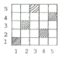
- 주자직
- 능직
- 평직
- 변화농직
(정답률: 알수없음)
9. 다음 합성섬유 중 축합중합에 의해 얻어지는 것이 아닌 것은?
- 나일론
- 아크릴
- 폴리에스테르
- 스판덱스
(정답률: 알수없음)
10. 섬유소 섬유 중에서 결정도가 가장 큰 섬유는?
- 비스코스 레이온
- 면
- 저마
- 황마
(정답률: 알수없음)
11. Nylon 6과 Nylon 66의 가장 현저한 성질의 차이는?
- 내열성
- 흡습성
- 탄성
- 비중
(정답률: 알수없음)
12. 다음 중 증량가공이 주로 실시되는 직물은?
- 견
- 면
- 양모
- 마
(정답률: 알수없음)
13. 폴리에스테르 필라멘트시 10,000m의 무게가 50g이면 몇 데이어인가?
- 45 D
- 4.5 D
- 450 D
- 0.45 D
(정답률: 알수없음)
14. 평직의 특성을 설명한 것 중 틀린 것은?
- 구김이 많다.
- 제직이 간단하다.
- 유연하다.
- 여러가지 변화있는 직물을 얻을 수 있다.
(정답률: 알수없음)
15. 재생 힙룰로스 섬유에 염착력이 좋은 염료는?
- 산성 염료
- 명기성 염료
- 캐치온 염료
- 직접 염료
(정답률: 알수없음)
16. 섬유구조 내부에 결정영역이 많을 때 나타나는 성질은?
- 감도가 커진다.
- 산도가 커진다.
- 흡습성이 커진다.
- 염색성이 좋아진다.
(정답률: 알수없음)
17. 섬유의 딘언형대와 가장 관계없는 섬유의 성질은?
- 광택
- 레질리언스
- 촉감
- 강도
(정답률: 알수없음)
18. 다음의 직물 중에서 능직에 속하는 것은?
- 도스킨(doeskin)
- 진(jean)
- 태피터(tafteta)
- 포폴린(poplin)
(정답률: 알수없음)
19. 면방직 공정 중 고급 품질의 실을 필요로 할 때 실시하는 공정은?
- 혼타면
- 소면
- 연조
- 점소면
(정답률: 알수없음)
20. 메듈라(Medulla)의 성질에 관한 설명으로 틀린 것은?
- 방적성을 좋게 하며 축융성의 원인이 된다.
- 원형 또는 타원형을 이루는 세포로 되어 있다.
- 결이 거친 켐프 모에서 주로 발견된다.
- 양모 발육시 영양원의 공급 통로이다.
(정답률: 알수없음)
2과목: 피복환경학
21. 피복의 정전기 발생과 관계가 가장 깊은 것은?
- 직물의 조직
- 섬유의 비중
- 섬유의 수분율
- 의복의 착용방법
(정답률: 알수없음)
22. 높은 기온에서 일어나는 인체의 생리현상으로 옳은 것은?
- 홀몬의 분기가 저해한다.
- 간장에서의 열 생산이 증가한다.
- 한선의 분비를 촉진하지 않는다.
- 피부혈관이 축소한다.
(정답률: 알수없음)
23. 피복에 의한 기후조절 범위는? (단, 습도 60% R.H, 기류 25cm/sec 무풍으로 일정할 때)
- 0 ± 8℃
- 10 ± 8℃
- 18 ± 8℃
- 26 ± 8℃
(정답률: 알수없음)
24. 복사열 측정에 사용되는 온도계는?
- Globe 온도계
- Kata 온도계
- Assmenn 동풍 온습계
- August 건습온도계
(정답률: 알수없음)
25. 한(汗)선에 대한 설명 중 틀린 것은?
- 인체의 능동 한선의 수는 성인보다 어린이가 더 많다.
- 한선의 표멱적 딤 분포는 손바닥, 발바닥에 가장 많다.
- 인체의 체온조절에 관여하는 한선은 에크린선이다.
- 한대지역보다 열대지역의 주인의 경우 능동 한선의 수가 많다.
(정답률: 알수없음)
26. 신체 각 부위 중 열 발생이 가장 많은 곳은?
- 간장
- 골격근
- 심장
- 호흡근
(정답률: 알수없음)
27. 피부 온 측정에서 5점법 측정부위에 속하는 것은?
- 가슴 부위
- 손 부위
- 대퇴 전면 부위
- 발 부위
(정답률: 알수없음)
28. 다음 중 열전도율이 가장 작은 직물은?
- 면적물
- 마직물
- 견직물
- 모직물
(정답률: 알수없음)
29. 쾌적한 의복을 착용했을 때 의복의 가장 내충의 기후는?
- 온도 33±1℃, 습도 60±10%, 기류 25±15cm/sec
- 온도 32±1℃, 습도 50±10%, 기류 25±15cm/sec
- 온도 34±1℃, 습도 40±10%, 기류 25±15cm/sec
- 온도 32±1℃, 습도 30±10%, 기류 25±15cm/sec
(정답률: 알수없음)
30. 농민을 위한 농약의 침해 방지를 구상할 때 가장 우선되어야 할 사항은?
- 경제성
- 대전성
- 방수성
- 통기성
(정답률: 알수없음)
31. 여름옷 옷감으로 갖추어야 할 위생적 성질에서 가장 중요한 것은?
- 열전도성
- 침윤성
- 방수성
- 통기성
(정답률: 알수없음)
32. 속옷으로서 그 요구도가 가장 큰 것은?
- 가벼워야 한다.
- 부드러워야 한다.
- 위생적이어야 한다.
- 밝은 색이어야 한다.
(정답률: 알수없음)
33. 약한 기류에서 강풍까지 측정이 가능하고, 응답성이 좋아 광범위한 분야에서 사용되고 있는 풍속계는?
- 풍차 풍속계
- 카타 합난계
- 열선 풍속계
- 서마스터 풍속계
(정답률: 알수없음)
34. 인체의 체온변동에 대한 설명으로 틀린 것은?
- 하루의 시각에 따른 체온의 변동은 일반으로 낮에는 낮고, 밤에는 높아 1일 주기로 변동한다.
- 성별로는 남성은 여성보다 평균 체온이 약간 높다.
- 연령별로는 소아의 체온은 성인에 비해 높고, 노인은 성인보다 낮은 경향이 있다.
- 체온 상한은 44~45℃로서 이 온도 이상은 체내의 단백질의 변성으로 생명을 잃게 되며, 하한은 33℃로서 한도를 넘으면 의식을 잃고 30℃에서는 생명이 위험하다.
(정답률: 알수없음)
35. 겨울의복 형태 및 착용에 관한 설명 중 틀린 것은?
- 피복 면적을 크게 한다.
- 점지 공기층을 갖지 않도록 한다.
- 겹쳐입기를 한다.
- 의복의 개구형태(상향, 하향, 수평개구)를 작게 한다.
(정답률: 알수없음)
36. 의복지가 수분을 흡수할 때 나타나는 현상은?
- 통기성의 증가
- 열전도율의 증가
- 보온력의 증가
- 중량의 감소
(정답률: 알수없음)
37. 일반적으로 체온을 측정할 때 다음 중 어느 부위의 체온을 주로 측정하는가?
- 직장온(直賬溫)
- 액와온(腋窩溫)
- 두부온(頭部溫)
- 흉부온(胸部溫)
(정답률: 알수없음)
38. 신체의 연부(軟部)에 가해지는 피복압(被服壓)의 위생학적인 허용치는?
- 40g/cm2
- 80g/cm2
- 2kg/cm2
- 4kg/cm2
(정답률: 알수없음)
39. 농민의 작업복지가 갖추어야 할 조건으로 잘못된 것은?
- 마찰에 잘 견디는 내구력이 있는 것
- 내세탁성 및 건조 속도가 빠른 것
- 적외선에 잘 견디고 염색은 농색인 것
- 진흙물, 비료, 약품 등에 잘 견디는 것
(정답률: 알수없음)
40. 감각온도(Efiective temperature)를 설명한 것 중 잘못된 것은?
- 안전 착의시의 쾌감대는 5-15℃에서 용이하고, 5℃이하 30℃이상은 CLO로 조절할 수 있으나 힘이 든다.
- 감각온도는 계절에 따라 쾌감(快感)도가 다르다.
- Yaglou, Miller등에 의해 고안된 감각적 지표이다.
- 다수의 피검자의 온도감각을 기초로 하여 기온, 기류, 기습의 온열인자를 총합한 지표가 만들어졌다.
(정답률: 알수없음)
3과목: 의복설계학
41. 아동복의 기본 원형에서 다음의 치수는?
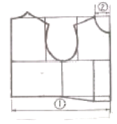
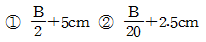
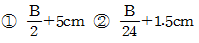
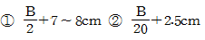
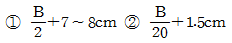
(정답률: 알수없음)
42. 그림과 같은 보정은 어떤 체형을 위한 것인가?
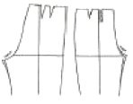
- 밑의 앞, 뒤 두께가 큰 체형
- 엉덩이가 처진 체형
- 대퇴부가 넓은 체형
- 복부 두께가 큰 체형
(정답률: 알수없음)
43. 색의 혼합방법 중 감법혼합의 3원색이 아닌 것은?
- Magenta(적자)
- Cyan(청록)
- Yellow(황색)
- Green(녹색)
(정답률: 알수없음)
44. 다음 중 계측항목과 계측방법이 바르게 연결된 것은?
- 엉덩이길이 – 오른쪽 옆 허리선에서부터 엉덩이 둘레선까지의 길이를 수직으로 잰다.
- 밑위길이 – 옆 가슴선에서부터 수직으로 의자의 앉은 면까지의 길이를 잰다.
- 촘길이 – 어깨선에서부터 수직으로 바목까지의 길이를 잰다.
- 앞길이 – 어깨선의 중심점에서 유두를 지나 허리선까지 잰다.
(정답률: 알수없음)
45. 옷의 단 부분에 올을 풀어서 매듭을 지어 숱 장식을 하는 장식봉은?
- 페거팅(fagoting)
- 프린징(fringing)
- 스모킹(smocking)
- 셰어링(shirring)
(정답률: 알수없음)
46. 스커트 길이에 따른 명칭과 그 설명이 틀린 것은?
- 맥시 스커트 : 발목까지 오는 스커트
- 롱 스커트 : 구두를 덮을 만큼 긴 스커트
- 사넬라인 스커트 : 극단적으로 짧은 스커트
- 미니 스커트 : 무릎 위로 올라간 짧은 스커트
(정답률: 알수없음)
47. 슬랙스(slacks) 원형을 제도할고 할 때 가장 필요한 치수들은?
- 허리둘레, 엉덩이둘레, 엉덩이길이, 밑위길이, 바지길이
- 허리둘레, 엉덩이둘레, 엉덩이길이, 바지길이
- 허리둘레, 엉덩이둘레, 밑아래둘레, 바지길이
- 엉덩이둘레, 엉덩이길이, 무릎길이, 밑위길이, 바지길ㅇ
(정답률: 알수없음)
48. 동계 색상의 농담의 배색으로 톤에 변화를 준 배색을 말하며, 통일감이 있고 정직한 느낌의 배색은?
- natural 배색
- tone on tone 배색
- tonal 배색
- similar 배색
(정답률: 알수없음)
49. 다음 소매(Sleeve)의 명칭은?
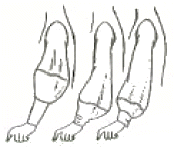
- 카울 슬리이브(Cowl sleeve)
- 캡 슬리이브(Cap sleeve)
- 랜턴 슬리이브(Lantern sleeve)
- 비숍 슬리이브(Bishop sleeve)
(정답률: 알수없음)
50. 바지 제도에 사용되는 약자와 뜻이 옳게 연결된 것은?
- W.L. - 무릎선
- H.L. - 허리둘레
- K.L. - 주름선
- S.C. - 소매산
(정답률: 알수없음)
51. 패턴 제도에 사용되는 부호들 중 늘임 표시는?
(정답률: 알수없음)
52. 색채의 혼합 중 두 가지 색채를 점이나 선으로 엇갈려 놓고 떨어진 거리에서 보면 새로운 색으로 보이는 것은?
- 감법혼색
- 중간혼색
- 동화혼색
- 색료혼색
(정답률: 알수없음)
53. 다음 중 디자인의 원리가 아닌 것은?
- 음양
- 비례
- 균형
- 리듬
(정답률: 알수없음)
54. bodice와 skirt로 나뉜 low waist one piece에서 어떤 비율로 두 부분을 나누는 것이 아름다운가?
- √5-1
- 8·6
- 15·8
- 5·8
(정답률: 알수없음)
55. 디테일(detail)의 설명으로 옳은 것은?
- 봉제 과정에서 장식할 목적으로 이용된 세부장식이다.
- 재단 과정에서 손실량 질감을 목적으로 이용되는 것이다.
- 봉제 과정에서 손실량 절감을 목적으로 이용되는 것이다.
- 봉제 과정에서 시점 허리를 목적으로 이용되는 세부처리이다.
(정답률: 알수없음)
56. 110cm 나비의 감으로 180° 플레어 스커어트를 만들고자 할 때 옷감량의 계산법은?
- 스커어트 길이 × 시접(5-12cm)
- 스커어트 길이 × 1.5 + 시접(5-12cm)
- 스커어트 길이 × 2 + 시접(5-12cm)
- 스커어트 길이 × 2.5 + 시접(5-12cm)
(정답률: 알수없음)
57. 다음 소매 원형에서 소매길이는 어느 부위인가?
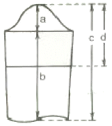
- a
- b
- d
- d
(정답률: 알수없음)
58. 다음 소매들 중 구조가 셋과 다른 하나는?
- 돌만 슬리이브
- 라글란 슬리이브
- 기모노 슬리이브
- 비숍 슬리이브
(정답률: 알수없음)
59. 다음 중 소매의 단 시접을 옳게 재단한 것은?
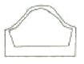
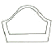
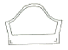
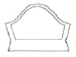
(정답률: 알수없음)
60. 스커트의 다트를 잘라 버리고, 폭을 몇 등분하여 연결하는 스커트로ㅆ 폭 수에 따라 종류가 나뉘어 지는 스커트는?
- 플리츠 스커트(Pleated Skirt)
- 스트레이트 스커트(Straiaht Skirt)
- 고어 스커트(Gored Skirt)
- 개더 스커트(Gather Skirt)
(정답률: 알수없음)
4과목: 봉제과학
61. 경사와 위사가 모두 36번수 면사이고, 그 밀도는 경사와 위사 모두 인치당 72본이 들어간 면직물이 있따. 이 면직물의 경사쪽 피어스(peirce)의 피복도(밀접도)는?
- 12
- 2
- 0.5
- 360
(정답률: 알수없음)
62. 같은 직장의 작업자에게 동일하게 영향을 미치는 여유 시간은?
- 실 끊어짐
- 바늘, 실의 교환
- 땀을 이음
- 정전
(정답률: 알수없음)
63. 봉제품의 제조에 드는 비용으로 봉제품 원가의 3요소가 아닌 것은?
- 노무비
- 재료비
- 제조경비
- 임대비
(정답률: 알수없음)
64. 직물의 특성으로 발생 될 수 있는 퍼커링(Puckering)의 원인과 직접적인 관계가 없는 것은?
- 직물이 밀도가 너무 클 때
- 봉사의 신축성이 클 때
- 재봉 바늘이 너무 굵을 때
- 바이어스로 재단할 때
(정답률: 알수없음)
65. 더블릭(therblig) 기호 중에서 다음의 그림은 무엇을 뜻하는가?
- 선택
- 조사
- 조합
- 분해
(정답률: 알수없음)
66. 봉제작업 공정을 세분화함에 이어서 그 분업 방식에 따라 몇 가지 시스템으로 나누기도 하는데 다음 중 그 시스템으로 가장 부적당한 것은?
- 번들 시스템(bundle system)
- 싱크로 시스템(synchronized system)
- 콘베이어 시스템(conveyor system)
- 레귤러 시스템(regular system)
(정답률: 알수없음)
67. 재봉사로서 일반적으로 갖추어야 할 기본 조건을 나열한 것 중 틀린 것은?
- 본봉 미싱의 재봉사는 반드시 S 꼬임의 실을 사용하여야 한다.
- 알맞은 인장강도를 가져야 한다.
- 이음 매듭이 적고, 사반이나 보플이 없어야 한다.
- 수축율의 변동이 없어야 한다.
(정답률: 알수없음)
68. 제도된 기본 패턴을 기준으로 하여 상, 하 좌우로 패턴의 바깥 선을 평행 이동시켜 필요한 크기를 그려나가는 방식의 그레이딩(Grading)을 무슨 방식이라 하는가?
- 트랙 시프트(track shift) 방식
- 레이디얼 시프트(radial shift) 방식
- 스윙 시프트(swing shift) 방식
- 레귤러 시프트(regular shift) 방식
(정답률: 알수없음)
69. 다음 중 공업용 재봉기의 종류를 봉합방식(땀의 모양)에 따라서 분류하는 방식은?
- 대분류 방식
- 중분류 방식
- 소분류 방식
- 세분류 방식
(정답률: 알수없음)
70. 다음에 나타난 스티치의 명칭은?
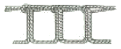
- 컴파운드 스티치
- 콕 스티치
- 체인 스티치
- 오버에지 스티치
(정답률: 알수없음)
71. 다음 식 중 봉축율 계산식으로 맞는 것은? (단, ℓ: 봉제 전의 봉제선의 길이, ℓ‘: 봉제 후의 봉제선의 길이)
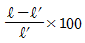
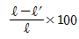
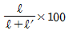
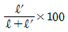
(정답률: 알수없음)
72. 공정편성 용어에서 B.P.T란 무엇인가?
- 표준가공 시간
- 순수가공 시간
- 여유율
- 총가공 시간
(정답률: 알수없음)
73. 공정분석에 사용되는 기호 중 정삼각형이 뜻하는 것은?
- 가공
- 운반
- 검사
- 정체
(정답률: 알수없음)
74. 표준시간을 나타내는 올바른 식은?
- 표준시간 = 순수가공 시간+(1+여유율)
- 표준시간 = 정미 시간-(1+여유율)
- 표준시간 = 순수가공 시간×(1+여유율)
- 표준시간 = 정미 시간÷(1+여유율)
(정답률: 알수없음)
75. 침봉사(needle thread) 1가닥만으로 이루어진 룩 스티치(look stitch)를 무엇이라고 하는가?
- 멀티 헤드 체인 스티치(multi head chain stitch)
- 핸드 스티치(hand stitch)
- 1 본사 록 스티치(one thread lock stitch)
- 2중 록 스티치(double lock stitch)
(정답률: 알수없음)
76. 그레이딩에 관한 설명으로 옳은 것은?
- 연단 된 천 위에 패턴 모양대로 완성선을 그리는 작업이다.
- 사이즈 별로 패턴의 치수를 조절하는 작업이다.
- 측정치수에 맞게 패턴을 제도하는 작업이다.
- 상하 좌우로 기본패턴의 바깥 선을 평행이동 시켜 그려가는 방법을 레디얼 시프트법(radial shift)이라 한다.
(정답률: 알수없음)
77. 재봉틀의 기구들 중 박음질 기구에 해당 되지 않는 것은?
- 바늘대 기구
- 노루발 기구
- 북집 기구
- 실재기 기구
(정답률: 알수없음)
78. 다음 중 본봉재봉기에 의한 재봉작업의 공정 기호는?
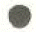
(정답률: 알수없음)
79. 봉사의 굵기를 나타냄에 잇어 티켓번호(ticket no.)란 무엇을 뜻하는가?
- 봉사의 굵기를 미터식 번수(Nm)로 나타낸 것이다.
- 봉사의 굵기를 텍스(Tex) 번수로 나타낸 것이다.
- 봉사의 굵기를 미터식 번수(Nm)×3으로 나타낸 것이다.
- 봉사의 굵기를 미터식 번수(Nm)/3으로 나타낸 것이다.
(정답률: 알수없음)
80. 다음 봉사 중에서 강도가 가장 좋은 봉사는?
- 면봉사(Ne 60×3)
- 아크릴사(70 D×3)
- 견봉사(21중 4×3)
- 폴리에스테르사(70 D×3)
(정답률: 알수없음)
5과목: 섬유제품시험법 및 품질관리
81. Q.C(품질관리)의 목적이 아닌 것은?
- 불량제품의 감소
- 단위시간당 생산성 향상
- 규격제품의 품질보장
- 노무자의 인건비 감소
(정답률: 알수없음)
82. 두꺼운 모직물인 트위트(Tweed)를 봉합하기에 가장 적합한 재봉틀 바늘의 번호는?
- 9호
- 11호
- 14호
- 20호
(정답률: 알수없음)
83. 편성물을 생산하는데 실이 갖추어야 할 조건 중 가장 거리가 먼 것은?
- 강도와 신도가 큰 것
- 강연사인 것
- 번수, 꼬임이 균일할 것
- 흡습성이 큰것
(정답률: 알수없음)
84. 섬유제품의 취급 시 아래의 그림이 뜻하는 것은?
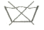
- 삶을 수 없음
- 물세탁은 되지 않음
- 드라이클리닝은 되지 않음
- 염소표백은 안됨
(정답률: 알수없음)
85. 섬유의 현미경 구조 중 단면이 원형이 아닌 것은?
- 레이온
- 아크릴
- 폴리에스테르
- 나일론
(정답률: 알수없음)
86. 실의 굵기 표시방법이 아닌 것은?
- 데니어(D)
- 텍스(Tex)
- 면사 번수(’s)
- 루프(loop)
(정답률: 알수없음)
87. 봉제품의 평가에 있어서 봉제 전의 원단 길이 3cm가 봉제 후에 1cm가 되었을 때의 개더링(gathering) 비(比)는?
- 3:1
- 2:3
- 2:1
- 1:2
(정답률: 알수없음)
88. 면 섬유를 완전히 용해 시키는 시약은?
- 5% 수산화나트륨
- 100% 아세톤
- 70% 황산
- 30% 암모니아
(정답률: 알수없음)
89. 20‘s와 30’s의 함연사의 변수는?
- 13
- 11
- 10
- 12
(정답률: 알수없음)
90. 섬유의 상태도 측정에 이요되고 있는 유통도에 관한 설명 중 틀린 것은?
- 유동도는 집도의 역(逆)이고, 단위로는 역 포아즈(reclprocal poise)가 쓰인다.
- 화학적 침해가 많을수록 유동도는 감소한다.
- 유동도는 정도계로 측정한다.
- 유동도는 액체의 흐름의 용이도이다.
(정답률: 알수없음)
91. 면 섬유에 머서리제이선(Mercerization)을 한 후 나타나는 변화기 아닌 것은?
- 광택의 증가
- 강도의 증가
- 무게의 증가
- 흡습성의 증가
(정답률: 알수없음)
92. 1cm의 수압에서 직물 1cm2를 통하여 공기 1cm3가 통과하는 데 걸리는 시간(sec)으로 나타내어 지는 것은?
- 공기투과도(Air permcability)
- 공기저항도(Air resistance)
- 기공도(Air porosity)
- 삼투압
(정답률: 알수없음)
93. 다음 섬유 중 표면에 천연 아디(node)가 있는 것은?
- 양모
- 견
- 면
- 아마
(정답률: 알수없음)
94. Nm(공통식 번수) 20번수 일 때 Ne(영국식 면시 번수)로 환산한 값은?
- 약 40.0
- 약 11.8
- 약 10.0
- 약 33.8
(정답률: 알수없음)
95. 호부(풀먹이는 것)에 의하여 피복재료의 성질이 달라지며 이 성질의 변화는 풀감의 종류에 따라서도 달라진다. 다음 중 호부에 의한 가장 적정한 효과는?
- 강연도, 내추성, 백도와 공택성을 향상
- 탄력성, 세척성, 강연성, 방추성을 향상
- 강연성, 세척성, 방오성, 광택성을 향상
- 대전방지성, 흡습성, 방오성, 내추성을 향상
(정답률: 알수없음)
96. 다음 섬유 중 공정 수분율이 큰 것부터 순서대로 나열된 것은?
- 나일론 6 – 트리아세테이트 – 아크릴 – 아세테이트
- 나일론 6 – 트리아세테이트 – 아세테이트 – 아크릴
- 아세테이트 – 아크릴 – 나일론 6 – 트리아세테이트
- 아세테이트 – 나일론 6 – 트리아세테이트 – 아크릴
(정답률: 알수없음)
97. 폭 80cm인 직물 1필의 무게가 6kg이다. 그 중 1.5m를 채취하여 무게를 측정하였더니 400g이었다. 이 직물 한 필의 길이는?
- 18.5m
- 22.5m
- 30.0m
- 32.5m
(정답률: 알수없음)
98. 양모를 염소 처리하는 목적은?
- 오염 방지
- 광택 증가
- 방충 효과
- 축융 방지
(정답률: 알수없음)
99. 철분(쇠의 녹)으로 오염된 의류를 깨끗하게 하고자 할 때 사용하는 약품은?
- 과산화수소
- 암모니아수
- 수산
- 차아염소산나트륨
(정답률: 알수없음)
100. 의복의 곰팡이 번식과 손상에 대한 설명 중 틀린 것은?
- 곰팡이의 발육에는 수분, 온도, 영양 및 산소가 필요하다.
- 온도는 5℃-15℃가 발육 가능한 범위이고, 10℃에서 가장 잘 번식한다.
- 곰팡이에 의한 의복의 손상은 냄새, 오염, 광택저하, 약화 등이다.
- 곰팡이 번식 방지를 위해서 충분히 건조하여야 한다.
(정답률: 알수없음)